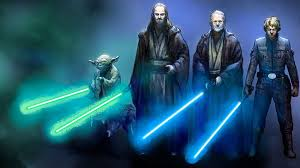

Personajes del lado luminoso
Los personajes del lado luminoso en Star Wars son aquellos que luchan por la libertad, la justicia y el equilibrio en la galaxia. Estos héroes suelen ser usuarios de la Fuerza y se dedican a combatir a los Sith y al Imperio Galáctico en sus diversas formas.
